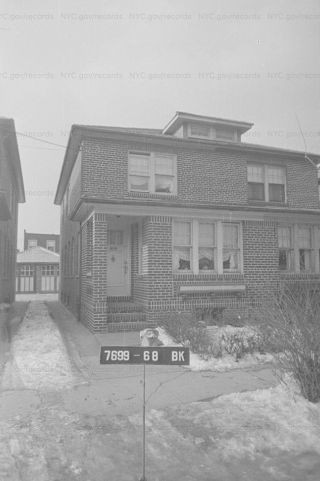
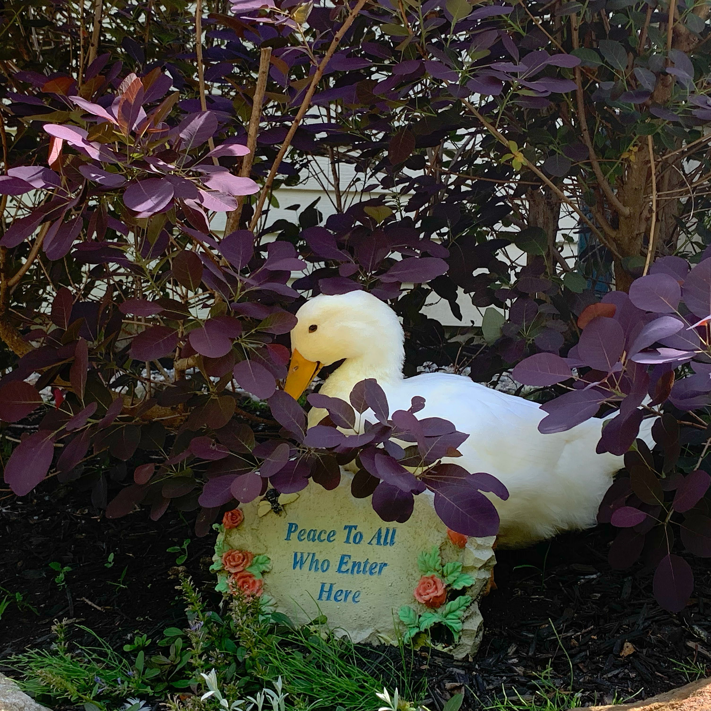
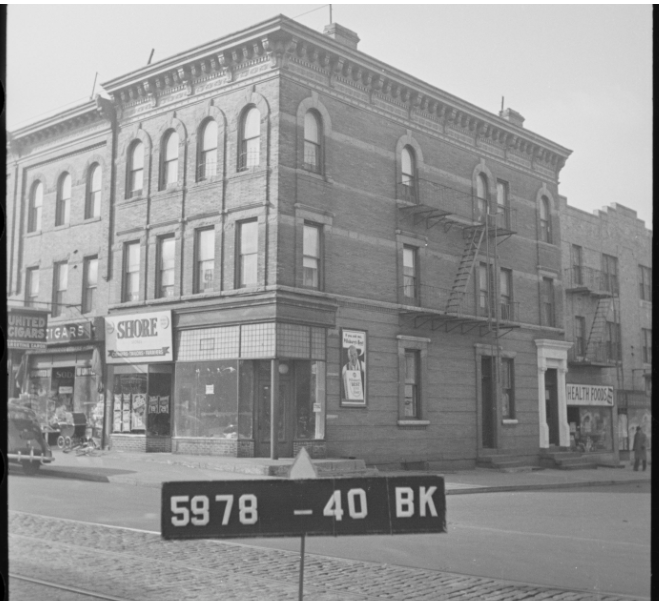

- Lifelong New Yorker
- Heart also tied to the Berkshire Mountains
- Interested in material culture, alternative economies, theology, and everything on the internet
- Undergraduate thesis focused on American Christianity, kitsch, and asssociated subcultures online
- Pursuing a master's degree in Museums & Digital Culture @ Pratt Info School
- Gaining specialization in digital conservation and curation
- Enjoys reading fiction on the train, looking at archival records, and re-organizing tchochke collections


